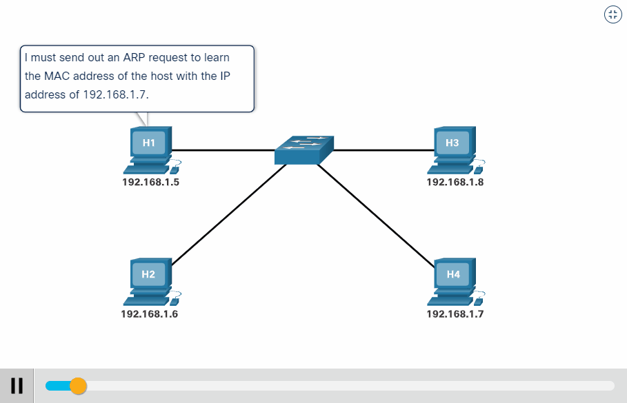
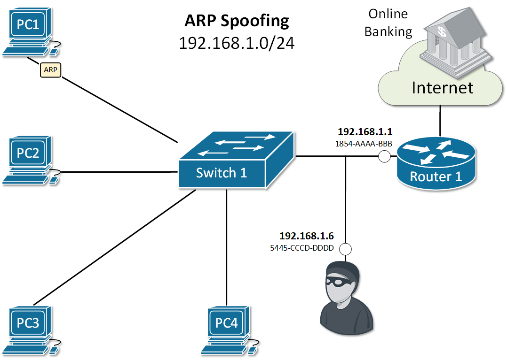
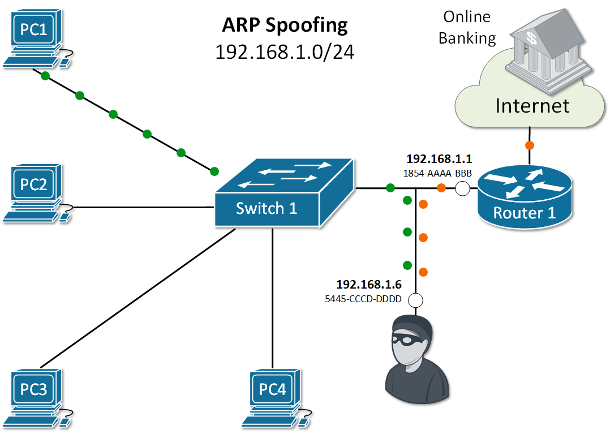
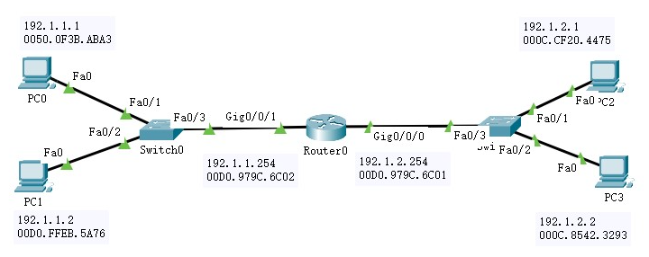
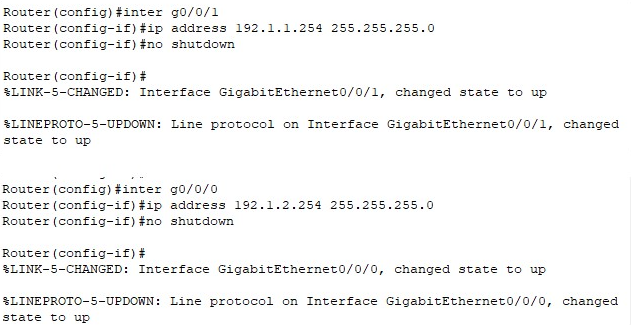
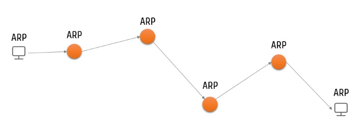

地址解析协议
@ARP- 概述 Overview
- 地址解析协议 ARP – Address Resolution Protocol
- 将 IP 地址解析为以太网 MAC 地址
- 设备通过 ARP 解析到目的 MAC 地址后，将会在自己的 ARP 表中增加 IP 地址到 MAC 地址的映射条目 Entry，用于后续到目的地报文的转发
- ARP条目分为动态ARP和静态ARP
- 动态ARP：
由ARP协议通过ARP报文自动生成和维护
可以被老化
可以被新的ARP报文更新
可以被静态ARP覆盖
当到达老化时间、接口down时将被删除
一般情况下，ARP 动态执行并自动寻求 IP 地址到以太网 MAC 地址的解析，无需管理员介入
- 静态ARP：
安全起见，为避免解析过程被劫持或篡改，可以限制和指定IP地址的设备通信时只使用指定的MAC地址
攻击报文无法修改此条目的IP地址和MAC地址的映射关系，从而保护了本设备和指定设备间的正常通信
- 协议栈需求 Stack
- 路由：根据 IP 地址找到目标主机所在网络
- 封帧：根据 MAC 地址找到目标主机
- 过程 Procedure
- PC1 知道 PC3 的 IP 地址，但不知道 PC3 的 MAC 地址；自身的 ARP 表找不到 PC3 的 MAC 地址，因此不能封帧交付
- PC1 先缓存消息，然后以 广播 的形式发起 ARP 请求：我的 IP 地址是 192.168.0.1，MAC地址是 00D0.5857.5331，我找 IP 地址是 192.168.0.3 的主机的 MAC 地址。收到请回答！
- 除 PC1 外，其它主机都会收到这个广播帧
- PC2 和 PC4 分析后发现，广播要找的目标不是自己，丢弃该帧
- PC3 分析后，发现是询问自己的：
以 单播 的形式给 PC1 回一个 ARP 响应：我是你找的 192.168.0.3，我的 MAC 地址为 0030.A313.6DA4
同时将 PC1 的 IP 地址和 MAC 地址保存到自己的 ARP 表中，以备后续使用
- PC1 收到 ARP 响应
更新自己的 ARP 表
封帧之前缓存的消息并发送
- 特点 Features
- IP 地址与 MAC 地址并没有一一对应的关系，且不是永久不变的
- 动态更新：设备重启，网卡更换等
- 有生存周期：超过生存周期的条目将被删除
- 每次 ARP 协议使用某个条目，该条目的生存周期都要重新计时
- ARP 协议不出网

发起 ARP → 获取 MAC → 封帧 → 转发
ARP - determine a device's Media Access Control (MAC) address based on its Internet Protocol (IP) address.


PC1 发起对 PC3 的 ARP 请求

安全 Security
- 设计缺陷 Flaws
- 不校验包
- 即使没有发送 ARP 请求，也会处理收到的 ARP 响应
- 导致 Result in
- 中间人攻击 Main-in-the-Middle
- 会话劫持 Session Hijacking
- 拒绝服务 Denial of Service (DoS)
- 措施 Solution
- Cryptographic Network Protocols 加密网络协议
- Packet Filtering 包过滤
- Virtual Private Network 虚拟私有网络
- ARP Spoofing Detection Software ARP欺骗监测软件
- ...


实操 Drill
- 命令 Command
- 搭建拓扑；分配IP地址
- 利用监视工具打开各设备ARP表
- PC0发PDU给PC1，查看ARP表的更新情况
- 清除ARP表重新测试
- 清除ARP表后使用ping 重新 测试，并分析情况
- 测试前，各主机ARP表内容
- 测试后，各主机ARP表内容
- 主机 → 交换机 → 路由器 → 交换机 → 主机
- 如果目标主机和源主机不在同一网段，目标主机就向网关发ARP请求，然后封装报文、发给网关
- 如果网关没有目标主机的ARP条目，网关发起ARP请求
- 如果网关有目标主机的ARP条目，网关直接把报文发给目标主机
1. 查看arp缓存条目
arp -a
2. 删除arp缓存条目
arp -d [IP]
3. 为指定主机添加一条静态条目
arp -s IP MAC
实操1 网内 ARP

| IP Address | Hardware Address | Interface |
|---|---|---|
| IP Address | Hardware Address | Interface |
|---|---|---|
| IP Address | Hardware Address | Interface |
|---|---|---|
| 192.168.1.2 | 0001.C753.8C96 | FastEthernet0 |
| IP Address | Hardware Address | Interface |
|---|---|---|
| 192.168.1.1 | 0060.470B.C9AD | FastEthernet0 |
实操2 跨网 ARP



逐段转发
实操3 多网段 ARP

Summary & Homework
- Summary
- ARP 的作用
- ARP 的解析过程
- ARP 的特点
- Homework
- 独立完成实操1、实操2网络拓扑的搭建和配置
- 根据各主机 ARP 表，认真分析通信过程中每一个阶段的 PDU 内容
- 进一步熟悉 PT 的使用
- 进一步完善整理 PT 常用命令
- Reading